Unsteady aerodynamics
Airfoil meets a vortical gust
0.0 / 20.4 s
We measure the flow around wings, feathers and flexible structures, and the forces that flow creates. Students and collaborators use the tunnel for research, coursework and demonstrations.
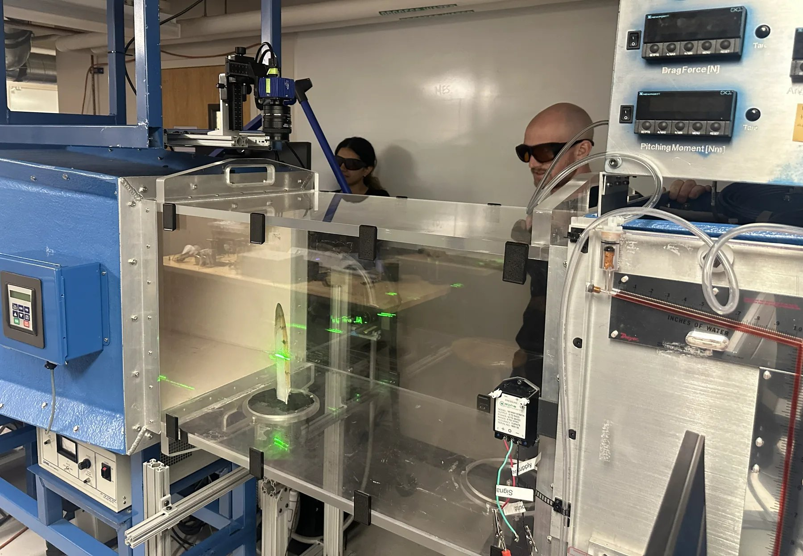
Each method answers a different question. Select one to see real data recorded in the lab.
Particle image velocimetry maps velocity and vorticity across a laser-lit plane.
Study 01 → c(x,t)Planar laser-induced fluorescence images where a fluorescent dye travels and mixes.
Study 02 → τwOil-film interferometry turns thinning oil drops into fringes whose spacing gives skin friction.
Study 03 → F, MSix-axis load cells record lift, drag and moments on mounted models and feathers.
Study 04 → p′, u′Differential pressure transducers and hot-wire anemometry resolve fast fluctuations.
Instruments →Each study shows the raw measurement, not just the conclusion. Play the movies, step through frames and probe the images yourself.
Each frame as recorded, background removed.
Run 209, frames from 40 to 62 s of the processed sequence. Hover the image to read the signal at a point.
Graduate students design the models, run the tunnel and turn the measurements into results.
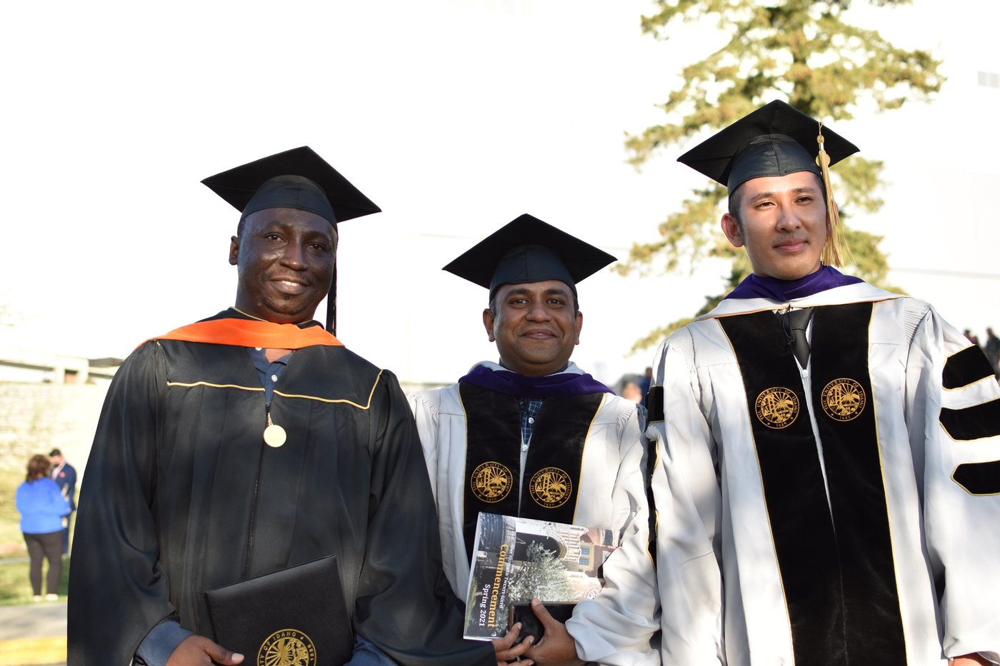
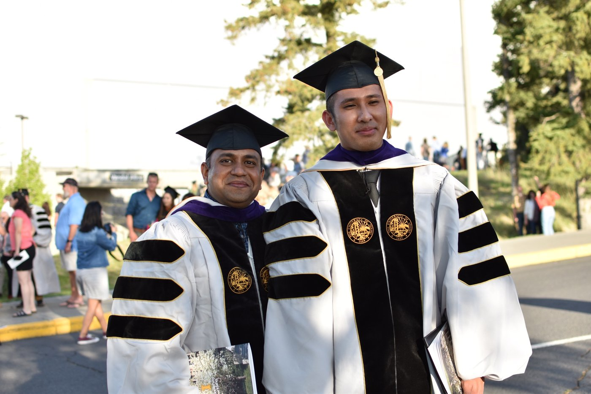
Graduate and undergraduate students run the experiments, from setting fan speed to aligning lasers. Visiting groups see the tunnel in action.
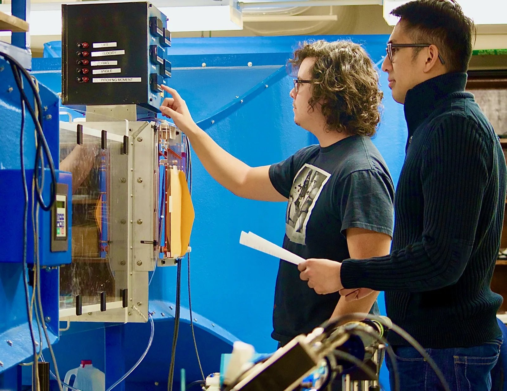
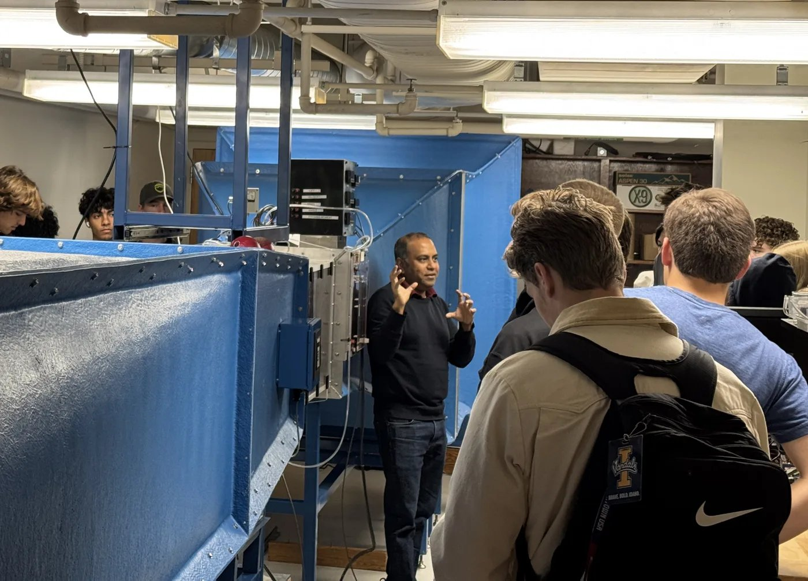
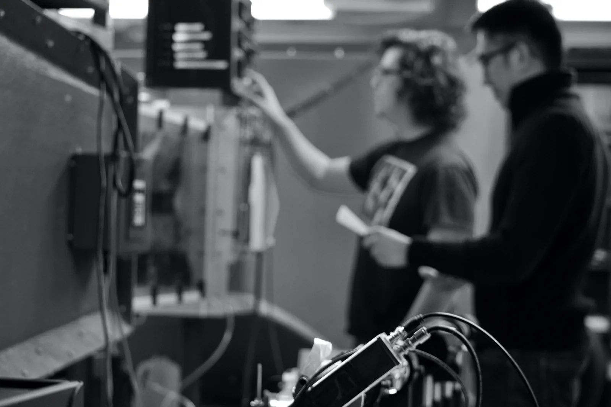
The same sting balance carries spheres for the drag lab and scale models through a pitch sweep. Students read lift, drag and pitching moment, then compare their numbers with theory on the whiteboard behind the test section.
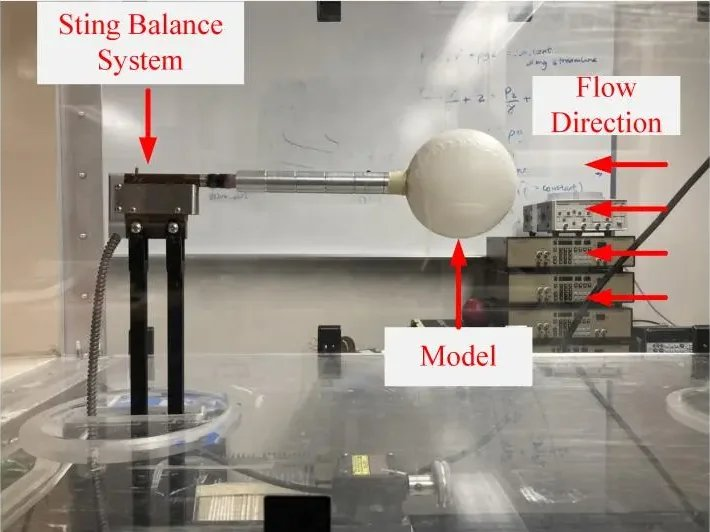
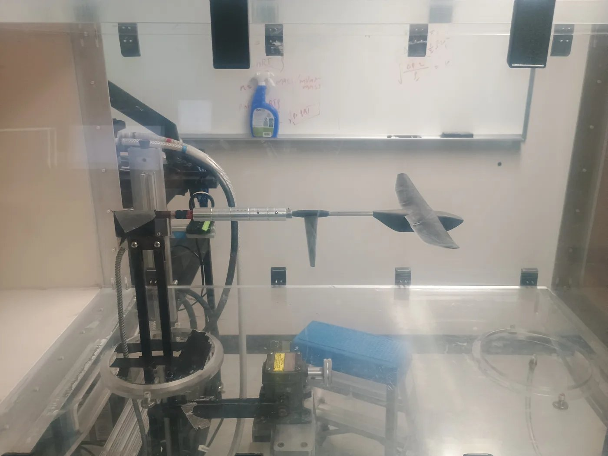
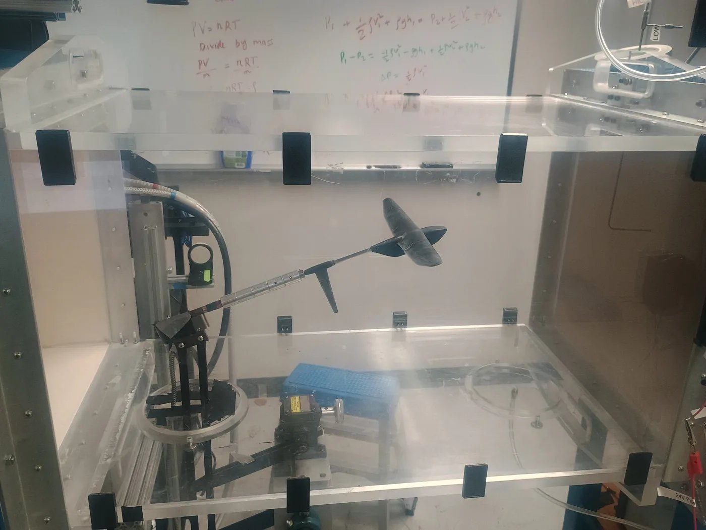
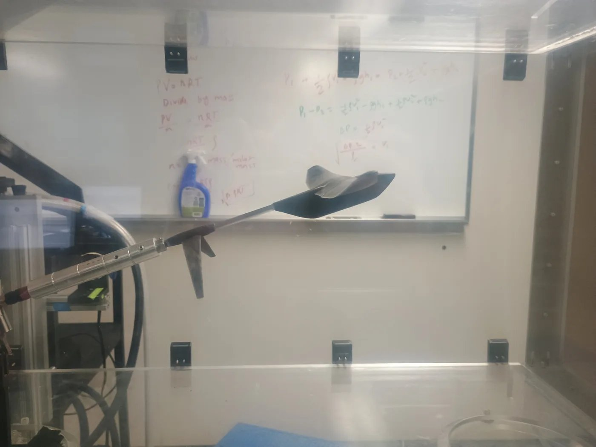
Students designed, built and flew a flying wing with a bell-shaped span load, following the design rules in NASA’s Prandtl-wing patent.
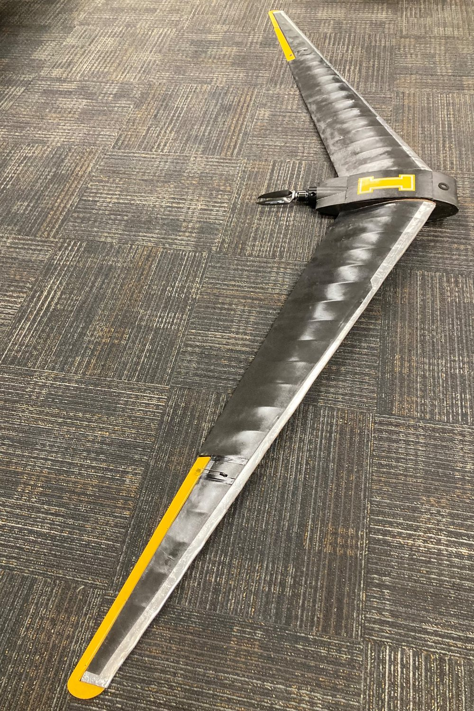
High school groups and campus visitors watch the tunnel run and see a live measurement. Contact the director to schedule a visit.
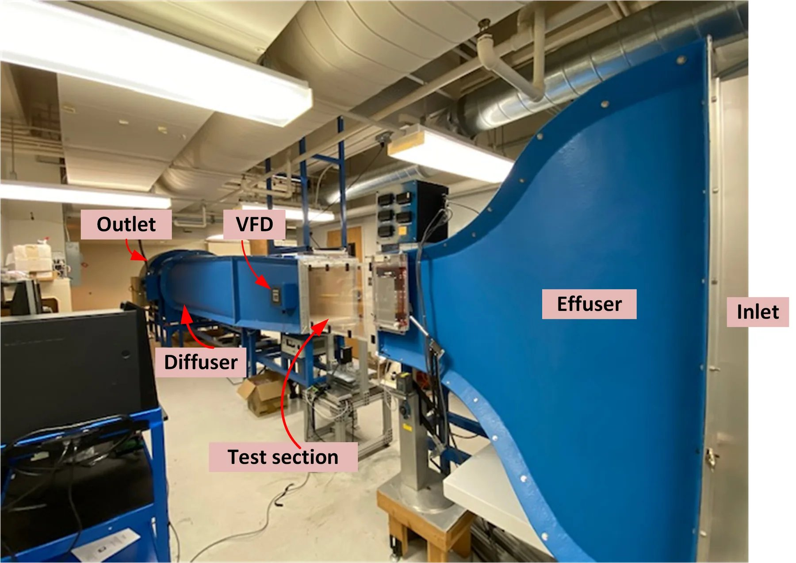
A variable-speed fan draws air through a 6.25:1 contraction into a transparent test section with optical access for laser diagnostics.
| Test section | 18 × 18 × 36 in 45.7 × 45.7 × 91.4 cm (W × H × L) |
|---|---|
| Speed range | Below 3.1 m/s to above 67.1 m/s <10 ft/s to >220 ft/s, open-ended bounds per manufacturer |
| Layout | Open circuit, variable-speed fan |
| Contraction | 6.25 : 1 |
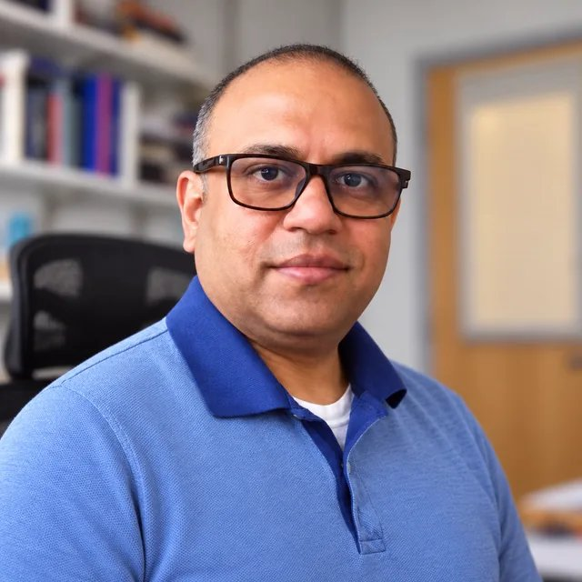
Associate Professor of Mechanical Engineering. Dr. Durgesh studies low-Reynolds-number aerodynamics with wind and water tunnel experiments. Get in touch about research collaborations, student projects or lab demonstrations.
vdurgesh at uidaho dot edu